O site público do PetGo360, a carteira que o veterinário abre pelo QR Code, a página de pets perdidos e o painel /admin do site.
Produto
PetGo360
Público
Veterinários, clínicas, pet shops, visitantes do site e a equipe que publica o conteúdo
Versão
Novembro de 2026
P2P Corp — Tecnologia e Inovação
Sumário
O site
Para o veterinário: a carteira pelo QR Code
Pets perdidos e encontrados
Disque Denúncia Pet
Link de indicação dos parceiros
O /admin do site
1. O site
Início: apresentação, baixar o app e o acesso do veterinário
Como funciona, Módulos e serviços (preços ao vivo), Para veterinários, Pets perdidos e Contato.
Abre no tema escuro; o sol/lua troca só no navegador do visitante.
Chat “Fale com o PetGo360” no canto: o mesmo atendimento do WhatsApp.
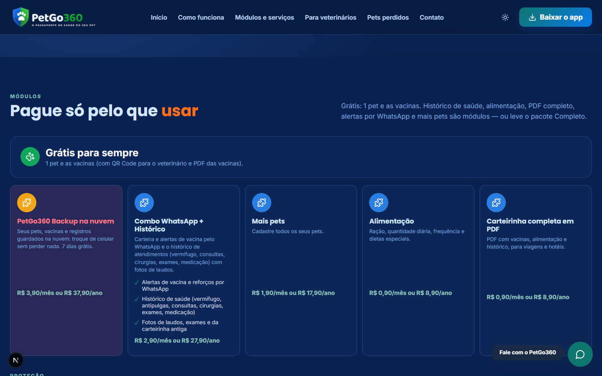
Módulos e preços, lidos do catálogo do painel
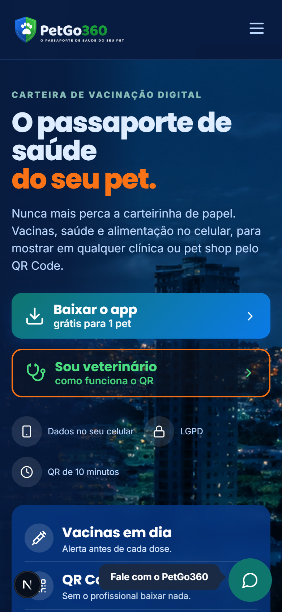
Site no celular
2. Para o veterinário: a carteira pelo QR Code
O tutor mostra o QR Code (no app ou no WhatsApp). O profissional aponta a câmera do celular e a carteira abre no navegador — sem instalar nada e sem cadastro.
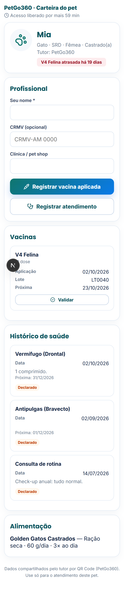
Carteira aberta pelo QR
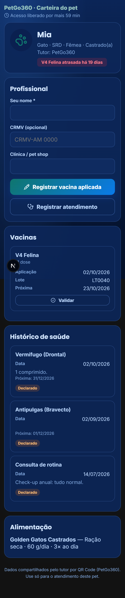
No tema escuro
Leia o QR com a câmera — ele vale 10 minutos para abrir; aberto, a página fica liberada por 1 hora.
Informe o seu nome, o CRMV (opcional) e a clínica/pet shop.
Registrar vacina aplicada: vacina (catálogo), data, lote, dose e próxima dose — já nasce Validada por profissional.
Validar as vacinas que o tutor declarou.
Registrar atendimento: consulta, vermífugo, exame, cirurgia, com detalhes.
O tutor recebe o aviso e o registro entra no app dele.
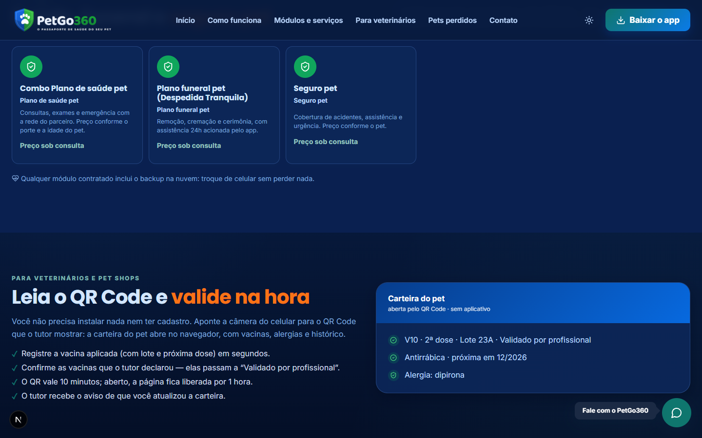
Seção do site para veterinários e pet shops
Use os dados só para o atendimento daquele pet. Depois do prazo, peça ao tutor um novo QR Code.
3. Pets perdidos e encontrados
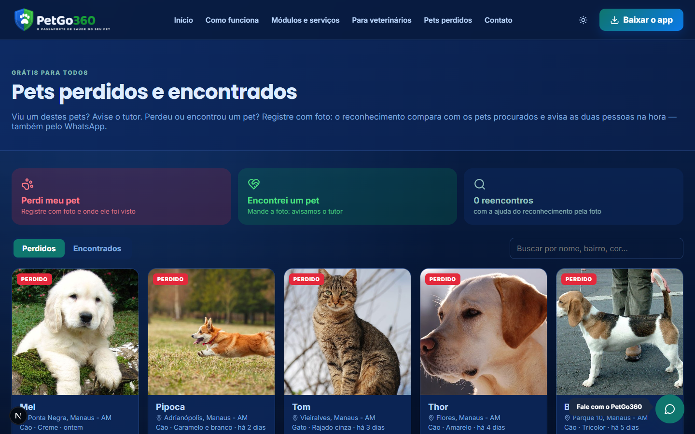
Pets perdidos: abas, busca e “Vi este pet”
Abra Pets perdidos no menu.
Viu um destes pets? Toque em Vi este pet, diga onde e deixe o seu WhatsApp — o tutor é avisado.
Perdeu ou encontrou um pet? Use Perdi meu pet ou Encontrei um pet e mande a foto.
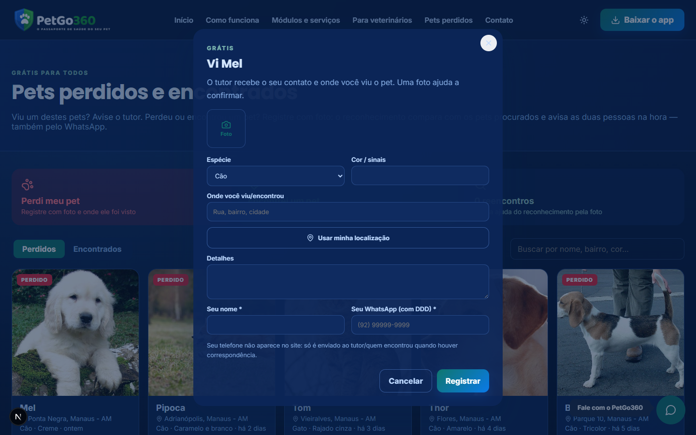
“Vi este pet”: o tutor recebe o seu contato
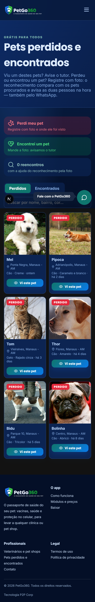
No celular, dois pets por linha
O telefone de quem registrou nunca aparece no site — só é enviado ao tutor/quem encontrou quando há correspondência.
4. Disque Denúncia Pet
Página /denuncia: denúncia ANÔNIMA de maus-tratos a animais — serviço de utilidade pública. Também há uma chamada na página inicial e o link no menu.
Escolha o tipo de maus-tratos e o animal.
Informe o estado e o município (obrigatórios — é por eles que a central sabe a qual órgão encaminhar), o endereço e um ponto de referência; se quiser, use a localização do navegador.
Conte o que viu e, se tiver, envie até 4 fotos.
Toque em Enviar denúncia: aparece o protocolo. Em “Acompanhar”, digite o protocolo para ver o andamento.
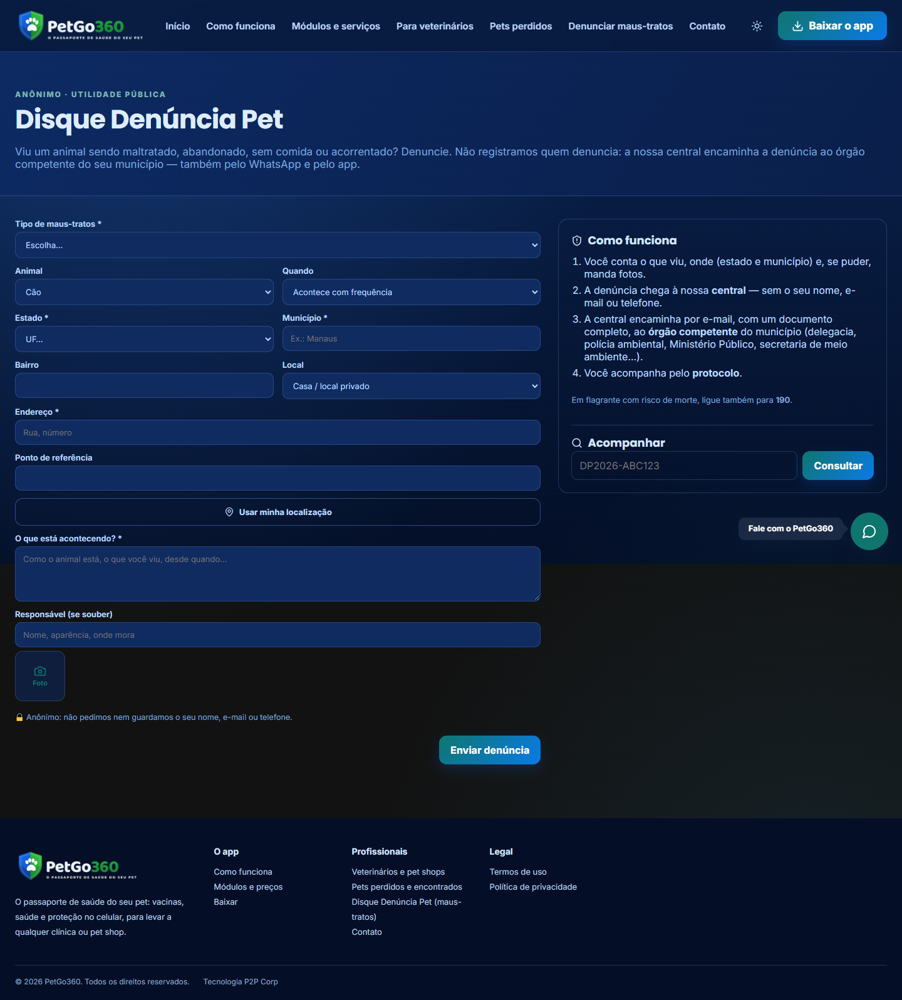
Disque Denúncia Pet no site
Não pedimos nem guardamos nome, e-mail ou telefone de quem denuncia — contra trotes, só um código cifrado e irreversível do navegador, que não identifica a pessoa. Se a plataforma liberar o serviço só para assinantes, a página mostra o aviso e indica o app.
5. Link de indicação dos parceiros
Página /i/CÓDIGO: o link que pet shops, clínicas e influenciadores divulgam. Mostra o código para usar no cadastro do app (o tutor ganha dias extras no teste grátis) e os botões das lojas.
O código é conferido no cadastro do app; a página não mostra nenhum dado do parceiro (comissão e Pix ficam só no painel).
6. O /admin do site
A equipe publica o conteúdo do site sem depender de TI: páginas, perguntas frequentes, avisos, interessados (contatos), usuários e a configuração do site. O mesmo conteúdo pode ser gerenciado pelo AdmSite360.
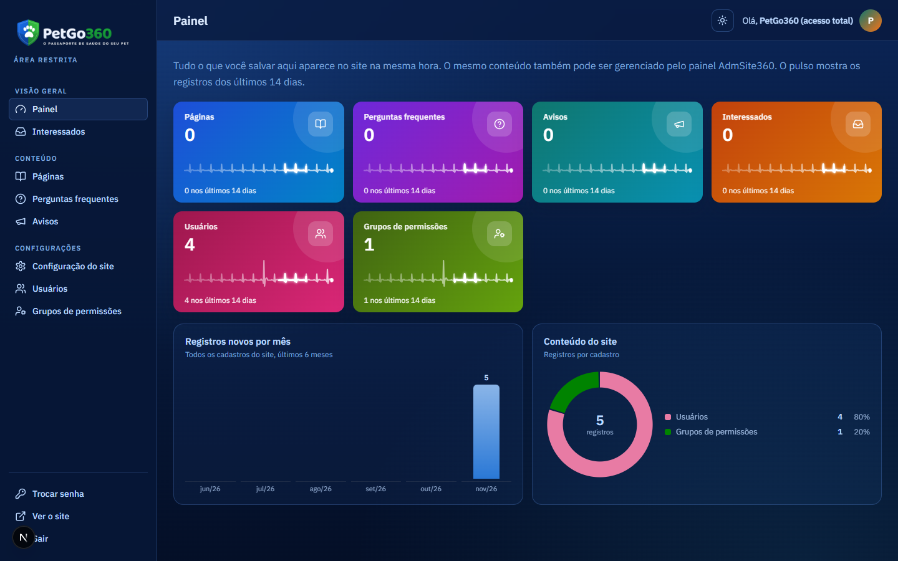
Painel do /admin: cadastros com o pulso dos últimos 14 dias, registros por mês e conteúdo do site
Entre em /admin com o seu usuário (e-mail ou login) e senha.
Configuração do site: tema padrão, contatos, redes, links das lojas, SEO, chat e formulário.
Páginas, Perguntas frequentes e Avisos (faixa ou janela).
Interessados: quem preencheu o contato do site.
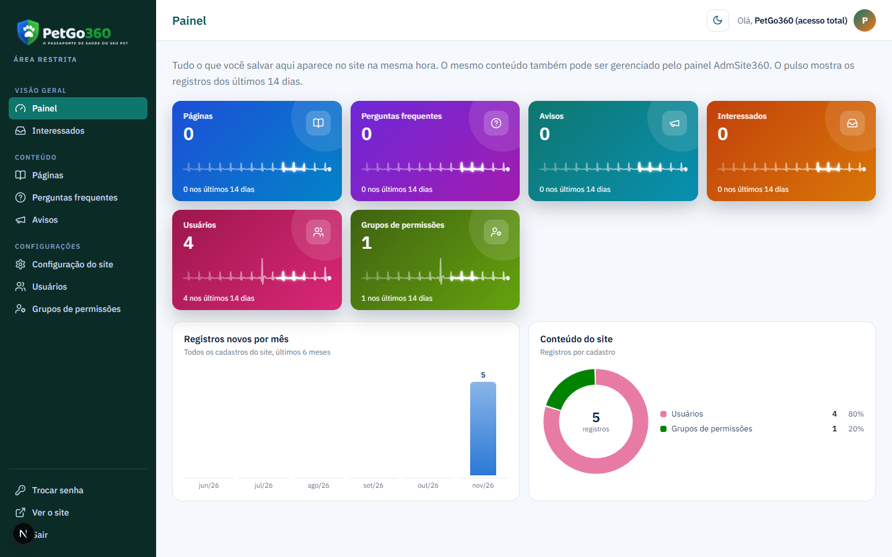
O mesmo painel no tema claro
PetGo360 — Site, página do veterinário e /admin · P2P Corp — Tecnologia e Inovação. As telas usam dados fictícios de demonstração.
 P2P Corp — Tecnologia e Inovação
P2P Corp — Tecnologia e Inovação